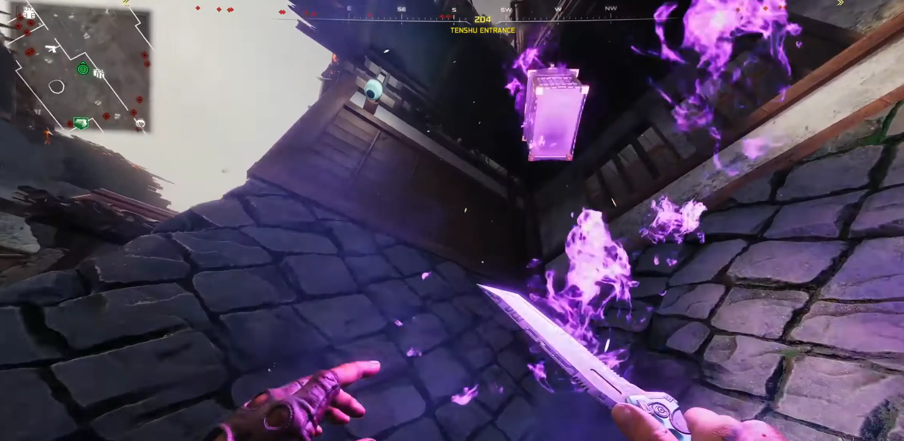
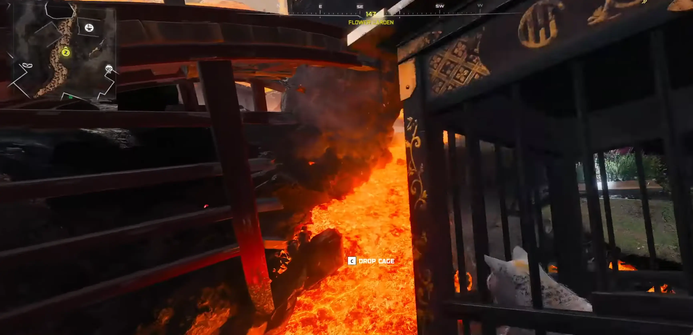
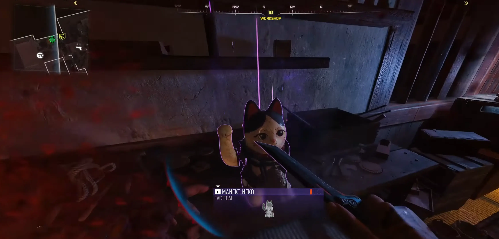
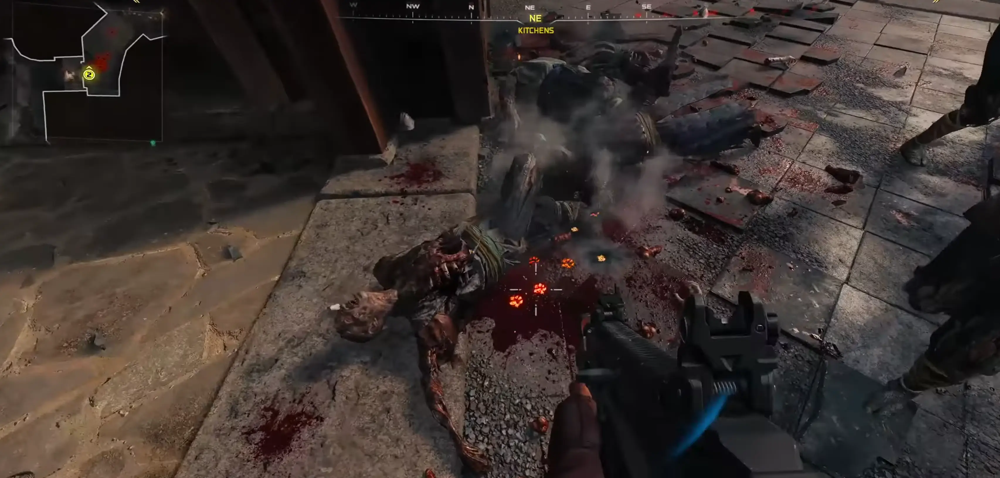
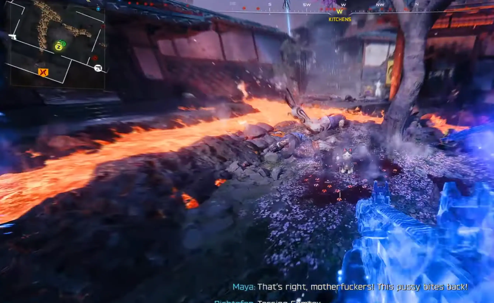
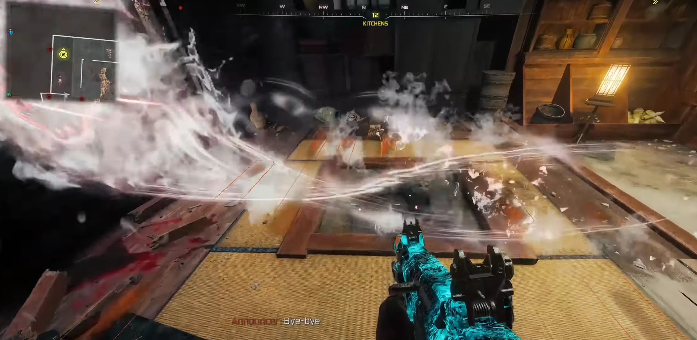
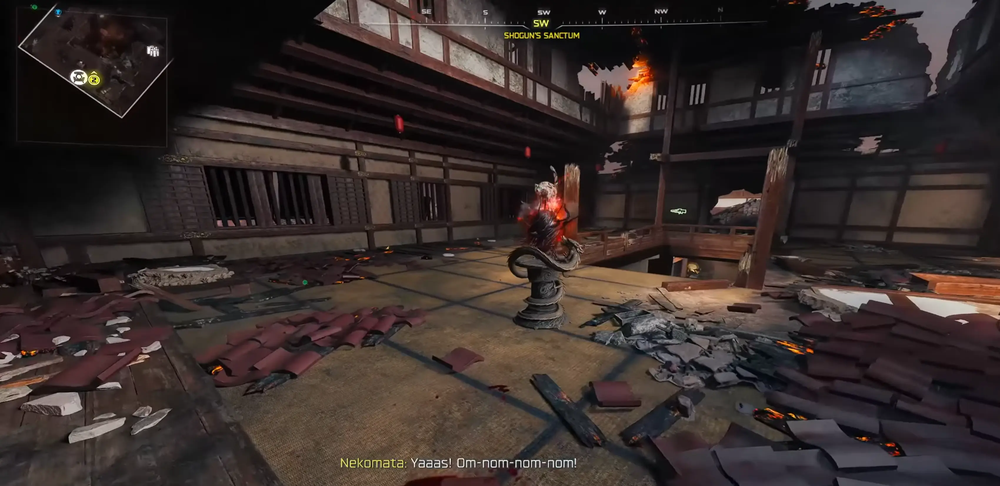

Najpierw musisz odblokować zasilanie oraz Pack-a-Punch. Gra poprowadzi Cię przez to za rękę. Bez tego nie ruszymy dalej.
Kup PhD Flopper.
Udaj się do Tenshu Entrance (Wejście Tenshu). Musisz użyć wybuchu z perka, aby zrzucić skrzynię z dwuogoniastym kotem. Skrzynia będzie emanować fioletową mgłą.
Podnieś kota i udaj się do dowolnego zbiornika z lawą. Wrzuć go do środka. Kot zniknie, a Ty zobaczysz, jak odpływa w ogniu.


Musisz teraz stworzyć specjalne wyposażenie – Maneki Neko. Potrzebujesz trzech części:
Głowa kota: Kuchnie (beczka przy Double Tap lub w budynku) lub Stróżówka.
Dzwonek (Furine): Stajnie (zniszczony dom), Obszar treningowy (przy drzewie wiśni) lub Strefa przygotowań (wisi wysoko).
Mechanizm (Karakuri): Magazyny (góra lub dół) lub Warsztat. Złóż to na stole rzemieślniczym w Workshop (Warsztat).

Musisz sprawić, by na mapie pojawiły się krwawe ślady łap. Zabijaj zombie w przejściach między głównymi lokacjami (np. między Stajniami a Obszarem treningowym lub w Ogrodzie kwiatowym). Gdy zobaczysz ślady w krwi, idź w stronę, w którą wskazują i zabijaj tam kolejne zombie (+- co jakieś 5 metrów). Powtarzaj to, aż na ziemi zobaczysz trzy ślady ułożone w trójkąt.

Rzuć swój granat Maneki Neko prosto w środek trójkąta z łap.
Ważne: Lawa musi być płynna. Jeśli zastygła w skałę, rzuć w nią zwykłym granatem, żeby ją skruszyć.
Gdy kot zapłonie, pojawi się Abominacja i go zje. Zabij potwora, a kot wypadnie na ziemię i zniknie a następnie musisz przejść do kolejnej rundy aby zlokalizować kota za pomocą Death Perception.

Kup perk Death Perception (Napój pozwalający widzieć wrogów przez ściany). Teraz musisz znaleźć "skrzypiące deski" (są w 3 miejscach: Obszar treningowy i dwa punkty w Kuchniach)., Zobaczysz tam lewitującego kota.
Musisz podejść do niego powoli, w kuckach. Nie możesz biegać, strzelać, ani stawać na skrzypiące deski (zobaczysz je podświetlone dzięki perkowi). Jeśli spalisz skradanie, kot ucieknie i musisz czekać do kolejnej rundy.

Zabierz kota do Shogun's Sanctum (Sanktuarium Szoguna), gdzie znajduje się World Seed (Ziarno Świata). Połóż kota obok ziarna.
Kot zacznie jeść ziarno i pulsować na czerwono.
Te pulsacje zadają obrażenia zombie, ale też Tobie!.
W przerwach między pulsami podbiegaj i uderzaj kota atakiem wręcz (Melee).
Po kilku ciosach kot "wypluje" na ziemię Twoją nagrodę – Nekomancera.

Spirit Bolt: Pojedyncze strzały (podobne do Ray Guna).
Hairball: Naładowany strzał, który wypluwa niszczycielską kulę kłaków i wymiocin.
Nico Punch: Atak wręcz pazurami.